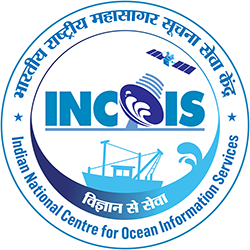
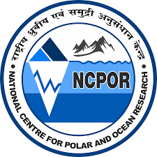

Conference Presentations
Impact of ocean stratification and warming on the intensification of pre-monsoon tropical cyclones over the northern Bay of Bengal

Interaction of multiscale weather events during the Indian summer monsoon and associated variability in the ocean–atmosphere coupled system: A study using ocean observations
Surface and subsurface variability of the North Indian Ocean and its relation to the Indian summer monsoon

Importance of tide gauge observations to identify the multiscale sea level variability over the western Bay of Bengal
Tidal variability of sea level along the east coast of India using tide gauge observations
Awards & Achievements
Institute Silver Medal
Second Prize — Student Hackathon
Academic Excellence